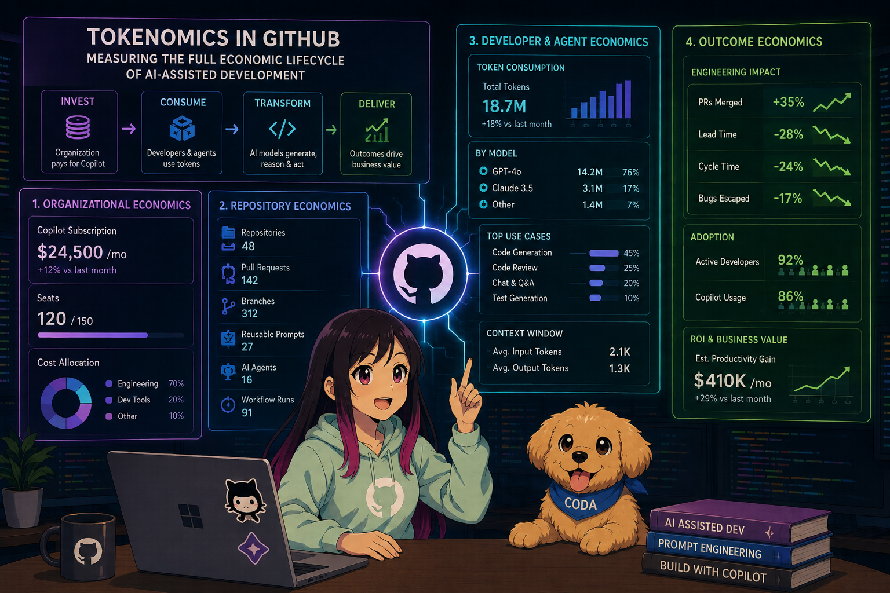

Tokenomics for AI Development: From AI Spend to Business Value
AI-assisted software development is becoming a standard part of how engineering teams work.
Developers use AI to write code, generate tests, explain unfamiliar systems, review pull requests, investigate bugs, and automate repetitive tasks. Agents can now go further by searching repositories, editing files, running tests, and iterating on their own changes.
That creates a new question for technology leaders:
Are we actually getting value from our AI investment?
It is tempting to answer that question by looking at a few simple metrics:
- Number of licensed users
- Number of prompts
- Number of generated lines of code
- Number of agent runs
- Number of active developers
Those metrics are useful, but they are not enough.
A high prompt count does not necessarily mean high productivity. A low prompt count does not necessarily mean low value. More generated code can even create more review and maintenance work.
To understand the real economics of AI-assisted development, we need to connect four separate layers:
- Organizational economics
- Repository economics
- Developer and agent economics
- Outcome economics
The goal is to connect these layers into one end-to-end view of AI value.
The main question becomes:
Are customers getting value from their AI investment, from billing and repository design through to developer behavior and business outcomes?
What does "tokenomics" mean here?
In this article, tokenomics does not mean cryptocurrency economics.
Here, tokenomics means the study of how AI resources are consumed and converted into useful engineering work.
That includes:
- Prompts
- Completions
- Input tokens
- Output tokens
- Context windows
- Model selection
- Agent actions
- Tool calls
- Repository configuration
- Developer adoption
- Pull request activity
- Code quality
- Business outcomes
A useful high-level formula is:
AI value = business outcome value - total AI cost
The total cost is broader than the subscription price:
Total AI cost =
subscription cost
+ runtime consumption cost
+ platform and operational cost
+ review and correction cost
+ quality and risk cost
That last category matters.
If an AI-generated change creates extra bugs, security reviews, or maintenance work, those costs are part of the economic picture too.
The four-layer framework
The framework is easier to understand as a flow:
Organizational investment
|
v
Repository configuration
|
v
Developer and agent behavior
|
v
Engineering and business outcomes
Each layer answers a different question.
| Layer | Question |
|---|---|
| Organizational economics | What are we buying, and where is the money going? |
| Repository economics | What have we configured or built to support AI-assisted development? |
| Developer and agent economics | How are people and agents using AI at runtime? |
| Outcome economics | What measurable value is being created? |
The important part is not just measuring each layer separately.
The important part is joining them together.
For example:
Organization spending
-> Repository configuration
-> Developer and agent usage
-> Pull request behavior
-> Business outcomes
Without those connections, we end up with a collection of dashboards that report activity but do not explain value.
Layer one: Organizational economics
Measuring the investment
The first layer starts with the customer’s investment.
At this level, we want to understand:
- How many seats were purchased?
- How many seats were assigned?
- How many assigned users were active?
- Which business units are consuming the most capacity?
- What is the cost per active developer?
- What is the cost per pull request?
- Which teams have unused allocations?
- Which organizations have high spend but low downstream activity?
This is the financial baseline.
A basic seat utilization formula looks like this:
Seat utilization =
active assigned seats
---------------------
purchased seats
In Python:
from dataclasses import dataclass
from datetime import date
from decimal import Decimal
@dataclass
class OrganizationSpend:
"""Stores AI investment and usage for one billing period."""
organization_id: str
billing_period: date
purchased_seats: int
assigned_seats: int
active_seats: int
subscription_cost: Decimal
estimated_runtime_cost: Decimal
@property
def total_cost(self) -> Decimal:
"""Return subscription cost plus estimated runtime cost."""
return self.subscription_cost + self.estimated_runtime_cost
@property
def seat_utilization(self) -> Decimal:
"""Return active seats as a percentage of purchased seats."""
# Avoid division by zero for organizations with no purchased seats.
if self.purchased_seats == 0:
return Decimal("0")
return (
Decimal(self.active_seats)
/ Decimal(self.purchased_seats)
* Decimal("100")
)
What this code is doing
This model separates two types of cost:
- Subscription cost
- Runtime consumption cost
That distinction is useful because the subscription may be relatively fixed, while runtime usage can vary depending on prompts, models, context size, and agent activity.
The example uses Decimal instead of float because this is financial data. Binary floating-point values can introduce small rounding errors that become awkward when aggregated across thousands of transactions.
An interesting detail
High seat utilization is not the same as high economic value.
An organization may have 95 percent active seats, but if developers are not completing work faster or producing better outcomes, the investment may still need attention.
Adoption is a prerequisite for value. It is not proof of value.
Cost allocation
Organizational economics becomes more useful when costs can be allocated to meaningful dimensions:
- Business unit
- Team
- Repository
- Developer cohort
- Product area
- Model
- Agent
- Task type
A simplified cost model might look like this:
Team AI cost =
allocated subscription cost
+ estimated runtime cost
+ platform allocation
Estimated runtime cost could be calculated as:
Runtime cost =
input tokens * input token price
+ output tokens * output token price
+ agent actions * agent action price
In mathematical form:
Where:
- \(T_i\) is input token usage
- \(C_T\) is input token price
- \(O_i\) is output token usage
- \(C_O\) is output token price
- \(A_i\) is agent action usage
- \(C_A\) is the estimated cost per agent action
The actual pricing model will depend on the product and contract, so prices should be stored separately from usage records.
That way, the organization can update pricing without rewriting historical usage data.
Layer two: Repository economics
Repositories are economic assets
The repository layer focuses on what has been built and configured around AI-assisted development.
This is more of a static view than a runtime view.
It can include:
- Repository-level instructions
- Organization-level instructions
- Prompt files
- Agent definitions
- Tool configurations
- Coding standards
- Test-generation prompts
- Documentation workflows
- Security review agents
- Domain-specific assistants
- Context files
- Model configuration
- Automation hooks
These assets represent investment.
A repository with clear instructions, reusable prompts, strong tests, and carefully designed agents may produce more reliable AI output than a repository with no guidance.
The repository layer asks:
What have we built to make AI usage more effective, consistent, and safe?
Static configuration versus runtime usage
A repository scan can tell us that a security-review agent exists.
It cannot tell us whether developers actually use it or whether it improves outcomes.
That distinction is important:
Static presence:
The repository contains a security-review agent.
Runtime behavior:
Developers invoke the agent during pull request preparation.
Outcome:
The agent helps identify security issues without increasing review time.
Each statement belongs to a different layer.
A repository inventory might look like this:
| Repository | Asset type | Asset name | Complexity | Last modified | Owner |
|---|---|---|---|---|---|
| payments-api | Agent | security-reviewer | High | 2026-07-28 | Platform |
| web-client | Prompt | test-generator | Medium | 2026-07-30 | Web |
| data-pipeline | Instructions | coding-standards | High | 2026-08-01 | Data |
Repository maturity
Organizations may want a way to compare repository readiness.
One possible maturity score is:
Where:
- \(I\) is instruction quality
- \(A\) is agent configuration quality
- \(P\) is prompt reuse
- \(T\) is test integration
- \(S\) is security and governance coverage
- \(w_1\) through \(w_5\) are configurable weights
Here is a simple implementation:
from dataclasses import dataclass
@dataclass
class RepositoryMaturity:
"""Stores normalized repository readiness scores from zero to one."""
instructions: float
agents: float
prompts: float
testing: float
security: float
def score(self) -> float:
"""
Calculate a weighted repository maturity score.
The values should already be normalized between zero and one.
"""
# These weights are examples and should be adjusted to match
# the organization's priorities.
weights = {
"instructions": 0.25,
"agents": 0.20,
"prompts": 0.15,
"testing": 0.25,
"security": 0.15,
}
values = {
"instructions": self.instructions,
"agents": self.agents,
"prompts": self.prompts,
"testing": self.testing,
"security": self.security,
}
# Multiply each score by its weight and add the results together.
return sum(values[key] * weights[key] for key in weights)
What this code is doing
The score is normalized between zero and one, which makes it easier to compare repositories of different sizes.
The weights are also explicit. That matters because different organizations will have different priorities.
For example:
- A security-sensitive company might increase the security weight.
- A platform team might emphasize reusable agents.
- A startup might emphasize testing and delivery speed.
- A regulated organization might give governance a much larger weight.
An interesting detail
Repository configuration often acts as a multiplier.
A good instruction file may influence thousands of future interactions. That means the economic value of the file may not appear in a single prompt or pull request.
Beware of maturity theater
Static assets can create the appearance of maturity.
A repository might contain:
- Ten agents that nobody invokes
- A prompt library with outdated examples
- Instructions that conflict with the actual coding standards
- Tests that pass without validating useful behavior
- Security guidance that is never enforced
That is why repository maturity should eventually be joined to runtime and outcome data.
A more complete formula could be:
Effective repository value =
repository maturity
* runtime adoption
* outcome correlation
If any one of those factors is close to zero, the effective value is limited.
Layer three: Developer and agent economics
Measuring real usage
The developer and agent layer measures what happens while work is actually being performed.
Useful signals include:
- Prompt count
- Completion count
- Input tokens
- Output tokens
- Context size
- Model selection
- Agent invocations
- Tool calls
- Retry frequency
- Interaction duration
- Suggested code acceptance
- Human edits after generation
- Generated tests
- Generated documentation
- Pull request descriptions
- Agent-produced changes
- Changes that are eventually merged
This is the layer most people think of when they hear "AI usage analytics."
It is also where many measurement mistakes happen.
Token volume is not productivity
A token is a unit of model processing.
It is not a unit of business value.
High token consumption may indicate:
- A complex task
- A large repository
- A useful long-context interaction
- Poor prompt quality
- Repeated failed attempts
- An agent loop
- Excessive tool usage
- A difficult debugging session
Low token consumption may indicate:
- Efficient prompts
- Strong repository instructions
- Simple tasks
- Mature coding patterns
- Low adoption
- Developers abandoning the tool
So token counts need context.
A useful metric is productive interaction rate:
Productive interaction rate =
interactions producing accepted output
--------------------------------------
total interactions
"Accepted output" needs a clear definition.
It might mean:
- Suggested code accepted with minimal editing
- A generated test retained in a later commit
- An agent-produced change merged
- A generated pull request description accepted
- A developer explicitly marking an interaction as useful
- A reduction in corrective follow-up prompts
Prompt efficiency
Prompt efficiency estimates how much useful progress is created from a given amount of AI consumption.
One possible formula is:
The coefficient \(\alpha\) represents the relative importance or cost of output tokens.
A simpler operational metric might be:
Change efficiency =
accepted changes
----------------
prompt count
Lines of code can also be used, but they are a weak proxy.
Ten lines that fix a serious production issue may be more valuable than one thousand generated lines that are never merged.
Better denominators include:
- Merged pull requests
- Completed work items
- Resolved defects
- Passing test cases
- Delivered product capabilities
- Reduced cycle time
Agent economics
Agents add another level of complexity.
A typical agent task may look like this:
1. Read repository files
2. Search for relevant code
3. Call tools
4. Modify files
5. Run tests
6. Inspect failures
7. Retry changes
8. Produce a final patch
The cost of the task is therefore more than the prompt and completion.
A simplified model is:
Agent task cost =
model token cost
+ tool invocation cost
+ compute cost
+ human review cost
Human review cost is particularly important.
An agent that creates a patch quickly but requires a long review may not create net value.
A practical formula is:
Detecting inefficient interactions
A tokenomics system should be able to identify patterns such as:
- Many short retries
- Long prompts followed by immediate rejection
- Repeated use of the same failed instruction
- Large context windows for small tasks
- High agent action counts with no merged result
- Frequent model escalation
- High token usage in low-adoption repositories
- High usage associated with increased defect rates
Here is a simple aggregation example:
from collections import defaultdict
from dataclasses import dataclass
@dataclass
class Interaction:
"""Represents one AI interaction during a development task."""
developer_id: str
repository_id: str
input_tokens: int
output_tokens: int
accepted: bool
duration_seconds: int
def summarize_interactions(
interactions: list[Interaction],
) -> dict[str, dict[str, float]]:
"""
Aggregate interaction metrics by developer.
The results can later be joined with billing, repository,
pull request, and outcome data.
"""
summary = defaultdict(
lambda: {
"interactions": 0,
"accepted_interactions": 0,
"input_tokens": 0,
"output_tokens": 0,
"duration_seconds": 0,
}
)
for interaction in interactions:
# Retrieve the running totals for the current developer.
metrics = summary[interaction.developer_id]
# Add the current interaction to the developer's totals.
metrics["interactions"] += 1
metrics["accepted_interactions"] += int(interaction.accepted)
metrics["input_tokens"] += interaction.input_tokens
metrics["output_tokens"] += interaction.output_tokens
metrics["duration_seconds"] += interaction.duration_seconds
for metrics in summary.values():
# Use the interaction count as the denominator for rate metrics.
total = metrics["interactions"]
metrics["acceptance_rate"] = (
metrics["accepted_interactions"] / total if total else 0.0
)
metrics["tokens_per_interaction"] = (
(metrics["input_tokens"] + metrics["output_tokens"]) / total
if total
else 0.0
)
return dict(summary)
What this code is doing
This function calculates both usage intensity and acceptance rate.
That combination is more useful than token volume by itself.
For production use, the output should be stored with additional dimensions such as:
- Organization
- Team
- Repository
- Model
- Agent
- Task type
- Time period
An interesting detail
A developer with a low acceptance rate is not necessarily less productive.
They may be using AI for exploration, architecture, debugging, or learning. In those situations, rejecting several suggestions may be completely normal.
Metrics should always be interpreted within the context of the task.
Layer four: Outcome economics
Connecting AI usage to value
Outcome economics is the most important layer and probably the hardest one to get right.
This layer asks whether AI-assisted development changes meaningful engineering or business results.
Potential outcome metrics include:
- Time to first pull request
- Time from first commit to merged pull request
- Pull request throughput
- Review time
- Deployment frequency
- Change failure rate
- Defect escape rate
- Rework rate
- Mean time to recovery
- Developer onboarding time
- Adoption by developer cohort
- Progress against product milestones
- Customer-facing feature delivery
The key word is meaningful.
A high number of prompts is an activity metric. A shorter pull request cycle time is much closer to an outcome.
Cohort analysis
Cohorts help us compare similar groups over time.
Possible cohorts include:
- Developers who adopted AI in January
- Developers who adopted AI in February
- Developers who frequently use agents
- Developers who use only inline suggestions
- Teams with mature repository instructions
- Teams without custom repository configuration
- New hires versus experienced developers
- Frontend developers versus backend developers
- Product teams versus platform teams
A simple before-and-after calculation is:
Change in pull request cycle time =
post-adoption cycle time
- pre-adoption cycle time
This is useful, but it is not enough on its own.
The team may have improved because:
- A new engineering manager joined
- The team reduced its scope
- A release deadline passed
- A process was simplified
- Staffing changed
- A repository migration finished
A stronger approach is difference-in-differences:
In plain English:
- Measure the change for the team that adopted AI.
- Measure the change for a similar team that did not.
- Subtract the control group's change from the treated group's change.
This does not prove causation, but it gives us a better estimate.
Outcome attribution is probabilistic
It is rarely possible to prove that one AI interaction directly caused a business result.
Instead, we should estimate contribution using multiple variables:
This is a conditional relationship.
It is not a guarantee.
A responsible analysis should explain:
- What was measured
- What was controlled
- What was not controlled
- Which findings are correlational
- Which findings came from experiments
- What confidence level applies
- Whether the result generalizes beyond the pilot
A practical outcome score
Some organizations may want a summary score.
One example is:
Where:
- \(V\) is delivery velocity
- \(C\) is cycle-time improvement
- \(Q\) is quality
- \(D\) is developer experience
- \(A\) is sustainable adoption
Here is a simple implementation:
def outcome_score(
velocity_change: float,
cycle_time_change: float,
quality_change: float,
developer_experience_change: float,
adoption_change: float,
) -> float:
"""
Calculate a balanced outcome score.
Each input should be normalized to the same scale, such as
-1.0 for significant decline and 1.0 for significant improvement.
"""
# These weights are examples. Organizations should tune them
# according to their own goals and risk tolerance.
weights = {
"velocity": 0.25,
"cycle_time": 0.25,
"quality": 0.25,
"developer_experience": 0.15,
"adoption": 0.10,
}
values = {
"velocity": velocity_change,
"cycle_time": cycle_time_change,
"quality": quality_change,
"developer_experience": developer_experience_change,
"adoption": adoption_change,
}
# Combine the normalized metrics into one transparent summary score.
return sum(values[name] * weights[name] for name in weights)
What this code is doing
The function assumes all inputs have already been normalized to the same scale.
That is necessary because the original metrics probably use different units:
- Velocity may be measured in completed work items.
- Cycle time may be measured in hours.
- Quality may be measured in escaped defects.
- Developer experience may come from survey scores.
Normalization also needs to account for direction.
A reduction in cycle time is usually positive. An increase in escaped defects is negative.
An important warning
A composite score should not hide individual metrics.
For example, a large increase in velocity should not be allowed to mask a serious increase in defects.
Quality and security should be treated as guardrails.
Connecting all four layers
The real value of the framework comes from joining the layers together.
A simplified data model might look like this:
organizations
organization_id
billing_period
subscription_cost
purchased_seats
assigned_seats
active_seats
repositories
repository_id
organization_id
repository_maturity_score
instruction_count
agent_count
prompt_count
interactions
interaction_id
developer_id
repository_id
model_id
input_tokens
output_tokens
accepted
timestamp
pull_requests
pull_request_id
repository_id
author_id
created_at
merged_at
review_duration
changed_files
defect_followup
outcomes
organization_id
team_id
period
adoption_rate
cycle_time
deployment_frequency
defect_rate
developer_experience_score
The relationships might look like this:
Organization
|
+-- Repositories
|
+-- Interactions
| |
| +-- Developers
|
+-- Pull requests
|
+-- Outcomes
With those relationships in place, we can ask better questions:
- Which organizations have high spend and low adoption?
- Which repositories have high maturity and high successful agent usage?
- Do mature repositories require fewer corrective prompts?
- Which developer cohorts reduced pull request cycle time?
- Which agents produce changes that are eventually merged?
- Which teams have increased usage but no measurable outcome improvement?
- Is higher token consumption associated with better results for specific task types?
- Does agent usage reduce time to pull request without increasing defects?
These are much more useful questions than simply asking how many prompts were sent.
A reference tokenomics pipeline
1. Ingestion
The pipeline can collect data from:
- Billing systems
- Organization administration
- Repository APIs
- Configuration files
- Interaction telemetry
- Agent execution logs
- Pull request metadata
- Commit data
- CI systems
- Deployment systems
- Developer surveys
- Product analytics dashboards
Each source has different timing and reliability characteristics.
For example:
- Billing data may be monthly.
- Interaction telemetry may be near real time.
- Pull request data may arrive through webhooks.
- Developer experience data may be collected quarterly.
The data model should preserve two timestamps:
- Event time, when the activity happened
- Ingestion time, when the platform received the record
That distinction is important when events arrive late.
2. Normalization
Raw events should be converted into a canonical schema.
from dataclasses import dataclass
from datetime import datetime
@dataclass
class CanonicalInteraction:
"""Normalized interaction record for downstream analytics."""
interaction_id: str
organization_id: str
repository_id: str
developer_id: str
model_id: str
input_tokens: int
output_tokens: int
accepted: bool
started_at: datetime
completed_at: datetime
source_system: str
@property
def duration_seconds(self) -> float:
"""Return the interaction duration in seconds."""
# Datetime subtraction produces a duration object.
return (self.completed_at - self.started_at).total_seconds()
What this code is doing
A canonical model gives every downstream system the same vocabulary.
Without one, different teams may define the same metric in different ways.
For example, one system might define an active developer as someone who sent one prompt in a month. Another might require five interactions in a week.
Both calculations could be technically correct while still producing incompatible dashboards.
An interesting detail
Many analytics disagreements are caused by semantic drift rather than arithmetic mistakes.
The number may be calculated correctly, but the definition behind the number has changed.
Metric definitions should therefore be documented, versioned, and reviewed.
3. Feature engineering
Useful derived features include:
- Tokens per interaction
- Interactions per developer
- Accepted output rate
- Agent retry rate
- Time from interaction to commit
- Time from commit to pull request
- Time from pull request to merge
- Repository maturity
- Cost per merged pull request
- Cost per active developer
- Defects per AI-assisted change
- Outcome change after adoption
Definitions should be versioned.
Changing the definition of "accepted output" can invalidate comparisons with previous periods.
4. Aggregation
A typical analytics hierarchy looks like this:
Interaction
-> Developer
-> Repository
-> Team
-> Organization
-> Enterprise
Every aggregation should preserve enough detail for drill-down.
Business leaders may want organizational ROI. Engineering enablement teams may need to inspect the exact repositories and agents associated with that result.
Both views should come from the same underlying data.
5. Serving
The resulting metrics could be served through:
- Data warehouse tables
- A semantic metrics layer
- Internal dashboards
- APIs
- Scheduled reports
- Alerting systems
- Experiment analysis notebooks
The architecture should separate:
- Raw events
- Cleaned events
- Derived facts
- Metric definitions
- Dashboard views
This separation makes debugging much easier.
Data quality and privacy
Data quality risks
Tokenomics systems are exposed to several common data quality problems:
- Missing organization identifiers
- Developers changing teams
- Repositories being renamed
- Deleted repositories
- Duplicate interaction events
- Delayed pull request events
- Inconsistent model names
- Incomplete agent telemetry
- Clock differences between systems
- Incorrect token estimates
- Mismatched billing periods
A reliable system should include:
- Schema validation
- Deduplication keys
- Late-event handling
- Referential integrity checks
- Freshness indicators
- Confidence scores
- Data lineage
- Backfill procedures
Privacy boundaries
Developer analytics need careful governance.
The goal should be to measure economic behavior without turning the system into unnecessary surveillance.
Good principles include:
- Prefer aggregate reporting
- Limit access to individual-level data
- Separate identity from productivity metrics where possible
- Avoid inspecting sensitive prompt content unless necessary
- Retain only the data needed for the use case
- Communicate measurement policies clearly
- Use appropriate access controls
- Avoid ranking individuals based only on AI usage
The safest default is to use the smallest identity level required for the question.
For example:
- Organization analysis may need only organization IDs.
- Team analysis may need team IDs.
- Cohort analysis may use pseudonymous developer IDs.
- Individual interaction inspection should require a clear operational reason.
Common analytical mistakes
Mistake one: Treating adoption as ROI
Adoption means people are using the system.
It does not prove that they are faster, more effective, or producing better outcomes.
Mistake two: Optimizing for token volume
Token volume can increase because of productive complex work or unproductive retries.
The objective should be useful outcomes, not maximum consumption.
Mistake three: Counting generated lines of code
Generated lines are easy to count, but they are weakly connected to value.
Code that is never merged or maintained should not be treated as economic output.
Mistake four: Ignoring repository context
Two developers may send the same number of prompts.
One may work in a mature repository with reliable tests and reusable agents. The other may work in an unstructured codebase with poor documentation.
Their usage is not economically equivalent.
Mistake five: Ignoring quality
Faster delivery with more defects may reduce value rather than increase it.
Quality metrics should be treated as guardrails.
Mistake six: Confusing correlation with causation
A team may improve after adopting AI because it also received:
- New leadership
- A smaller scope
- Better processes
- More experienced developers
- A simpler release schedule
Attribution requires controls, experiments, or carefully designed longitudinal analysis.
Mistake seven: Building dashboards before defining metrics
A beautiful dashboard with ambiguous metric definitions creates false confidence.
Definitions should come before visualization.
A practical value model
A complete tokenomics model can estimate value at several levels.
Organization-level value
Estimated business value may include:
- Developer time saved
- Avoided contractor cost
- Faster revenue delivery
- Reduced incident cost
- Reduced onboarding time
- Lower maintenance cost
- Improved product throughput
The important part is to document how each estimate was created.
Repository-level value
Repository output is affected by team size, project scope, and work complexity, so this metric should be used for comparison carefully.
Interaction-level value
Interaction-level estimates are noisy.
They become more useful when aggregated across similar task categories, such as:
- Test generation
- Documentation
- Bug fixing
- Refactoring
- Pull request preparation
- Code explanation
Outcome-level value
For metrics where lower is better, such as cycle time:
For metrics where higher is better, such as deployment frequency:
Every calculation should state:
- Baseline period
- Measurement period
- Comparison group
- Normalization method
- Confidence level
- Known limitations
Using a pilot to validate the framework
This type of initiative is a natural candidate for a focused pilot before a broader rollout.
The pilot should not try to measure everything.
Its purpose should be to test whether the four layers can be connected reliably and whether the resulting analysis is useful to customers and internal teams.
Recommended pilot questions
A pilot could answer:
- Can billing data be joined to repositories?
- Can repository assets be scanned consistently?
- Can runtime interactions be attributed to teams and repositories?
- Can pull request and adoption metrics be connected to usage?
- Can the system calculate cost per active developer?
- Can it identify high-usage, low-outcome segments?
- Can it identify repositories where configuration improves runtime efficiency?
- Can customers understand the results?
- Can teams act on the recommendations?
Choosing pilot participants
A representative pilot should include:
- Different organization sizes
- Different repository types
- Different programming languages
- Different levels of AI adoption
- Teams using agents
- Teams using mostly conversational assistance
- Repositories with custom instructions
- Repositories without custom instructions
- Mature and immature engineering processes
If the pilot includes only highly mature teams, the results may be too optimistic.
Pilot success criteria
Success should be measured across three dimensions.
Technical success
- Data sources connect correctly
- Identifiers resolve across layers
- Events are deduplicated
- Metrics are reproducible
- Dashboards meet freshness expectations
Analytical success
- Metrics reveal useful patterns
- Results survive technical review
- Correlations are not presented as causal claims
- Recommendations can be tested
- Data quality is measurable
Customer success
- Customers understand where their investment goes
- Customers can identify underused capacity
- Customers can improve repository configuration
- Customers can understand adoption by cohort
- Customers can connect usage to delivery outcomes
From reporting to recommendations
A tokenomics system should not stop at reporting.
It should help teams decide what to do next.
Billing recommendations
- Reallocate unused seats
- Investigate inactive assignments
- Compare cost per active developer
- Identify unusual cost increases
- Review organizations with high spend and low adoption
Repository recommendations
- Add repository-level instructions
- Consolidate duplicated prompts
- Retire unused agents
- Add test-generation workflows
- Improve security guidance
- Standardize agent permissions
Runtime recommendations
- Reduce repeated retries
- Improve prompt templates
- Use smaller context for simple tasks
- Route complex tasks to appropriate models
- Investigate agents with high action counts and low merge rates
Outcome recommendations
- Investigate teams with high adoption but no cycle-time improvement
- Replicate practices from high-performing cohorts
- Run controlled experiments
- Add quality guardrails
- Measure onboarding impact separately from experienced developers
Every recommendation should include:
- Evidence
- Expected benefit
- Confidence
- Required action
- Owner
- Measurement plan
- Review date
For example:
{
"recommendation_type": "repository_configuration",
"repository_id": "payments-api",
"recommendation": "Add standardized security-review instructions",
"evidence": {
"repository_maturity": 0.31,
"security_agent_usage": 0.04,
"defect_followup_rate": 0.12
},
"expected_benefit": "Improve consistency of security-focused review tasks",
"confidence": 0.68,
"measurement_plan": "Compare security-related pull request findings over two release cycles"
}
What this example is doing
The recommendation is not just a sentence.
It contains:
- The type of improvement
- The target repository
- The evidence behind the suggestion
- An expected benefit
- A confidence estimate
- A way to test whether the recommendation worked
That last part is essential.
A recommendation without a measurement plan is just an opinion with better formatting.
Why connecting all four layers matters
The four-layer model changes the conversation from:
How much are developers using AI?
to:
How does organizational investment become measurable engineering and business value?
That is a much more useful question.
The organizational layer explains allocation.
The repository layer explains enablement.
The developer and agent layer explains behavior.
The outcome layer explains impact.
Individually, each layer is incomplete.
Together, they create an investigation path:
Investment:
Are we allocating resources effectively?
Configuration:
Have we created the right repository assets?
Behavior:
Are developers and agents using those assets productively?
Outcomes:
Is the organization delivering better results?
This also creates a shared language across different teams.
Finance can understand allocation and cost.
Engineering can understand runtime behavior and repository practices.
Developer experience teams can understand adoption and friction.
Product leadership can understand delivery outcomes.
Security teams can understand control effectiveness.
Everyone gets a different view of the same underlying economic model.
Final thoughts
AI development economics cannot be reduced to:
- Seat counts
- Prompt counts
- Token counts
- Lines of generated code
- Agent run counts
Those metrics are useful inputs, but they are not the destination.
A mature tokenomics system should connect:
- Organizational economics, which measures investment and spend
- Repository economics, which measures static configuration and reusable assets
- Developer and agent economics, which measures runtime consumption and behavior
- Outcome economics, which measures engineering and business impact
The most important design principle is traceability.
Every major conclusion should be traceable through a chain like this:
Business outcome
-> Engineering metric
-> Developer or agent behavior
-> Repository configuration
-> Organizational investment
The finished product should not be a dashboard that merely reports activity.
It should be an evidence system that helps organizations decide:
- Where to invest
- What to improve
- Which practices to replicate
- Which configurations to retire
- Which outcomes to validate
- How to increase the value of AI-assisted development
The strongest tokenomics model is not the one that counts the most tokens.
It is the one that explains which tokens, repository assets, developer behaviors, and agent actions contribute to meaningful outcomes.
That is the path from AI consumption analytics to AI value realization.